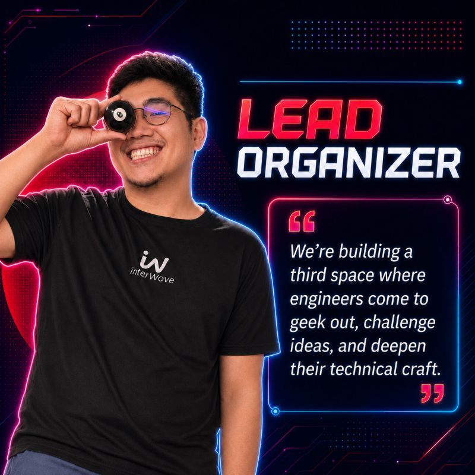
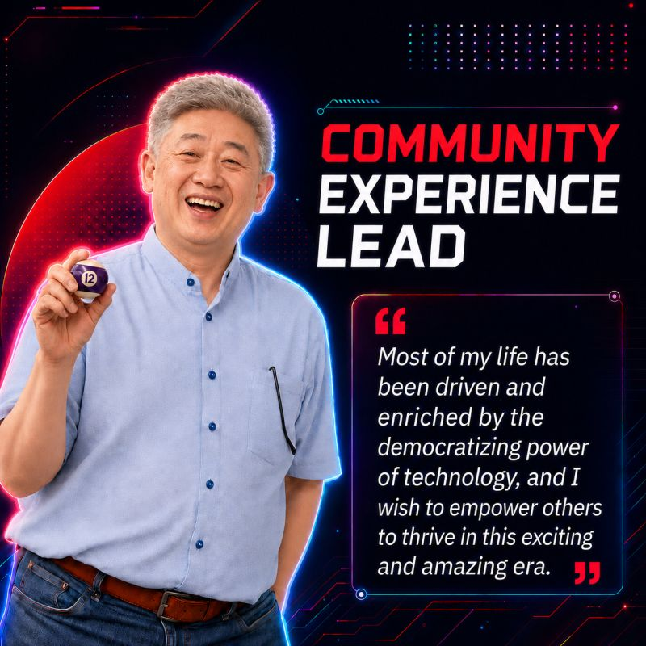
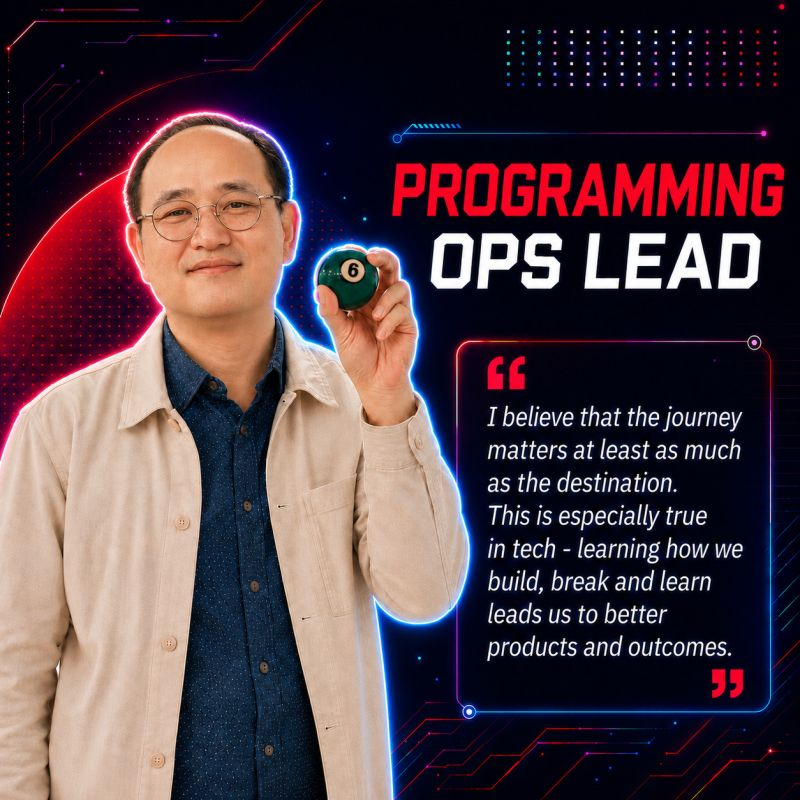
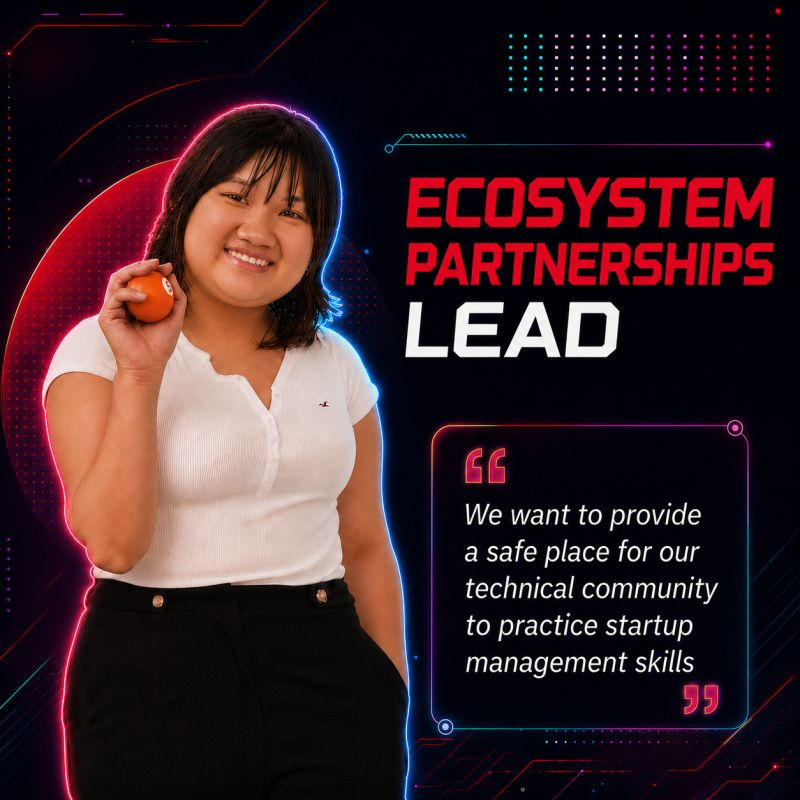
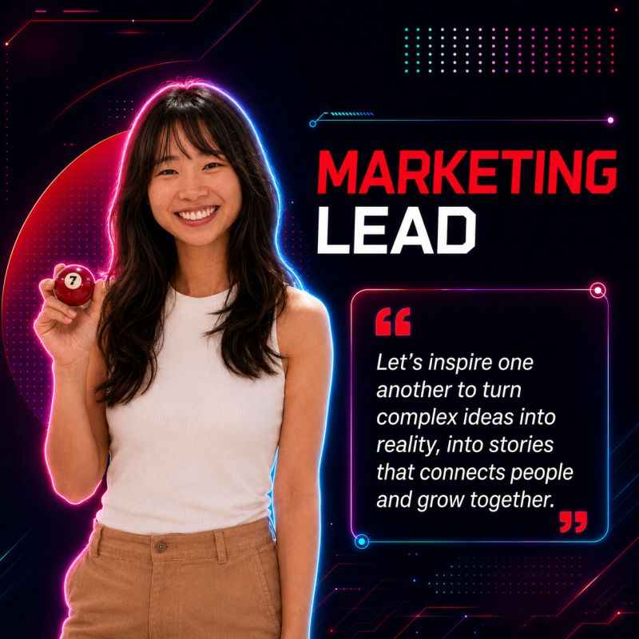

Lead Organizer
Leong Han Wai
Keeps Techies feeling like a true community: a place to connect, geek out, and go deeper into the craft together.
LinkedIn ↗The people behind Techies
We are building a space where engineers can connect, get geeky, challenge their craft, and learn from one another without the fluff.

Lead Organizer
Keeps Techies feeling like a true community: a place to connect, geek out, and go deeper into the craft together.
LinkedIn ↗
Community Experience Lead
Turns Techies ideas into thoughtful, practical programmes and events, with workflows that make knowledge and opportunity more accessible.
LinkedIn ↗
Programming Ops Lead
Runs end-to-end event execution and technical programming, from preparing speakers to delivering a high-signal, builder-first experience.
LinkedIn ↗
Ecosystem Partnerships Lead
Cultivates relationships with sponsors, venues, speakers, and ecosystem partners to create more opportunities for the community.
LinkedIn ↗
Marketing Lead
Brings Techies to life through event highlights, social recaps, marketing assets, and the photos that capture the room.
LinkedIn ↗